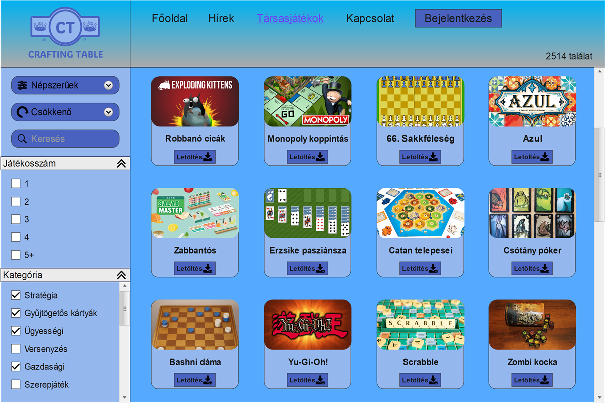
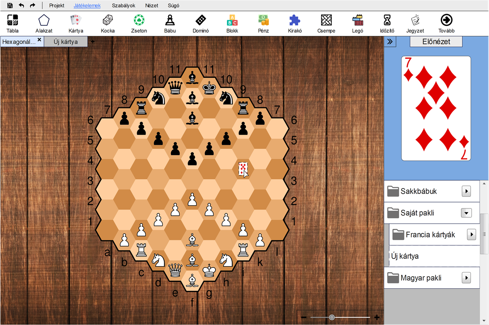
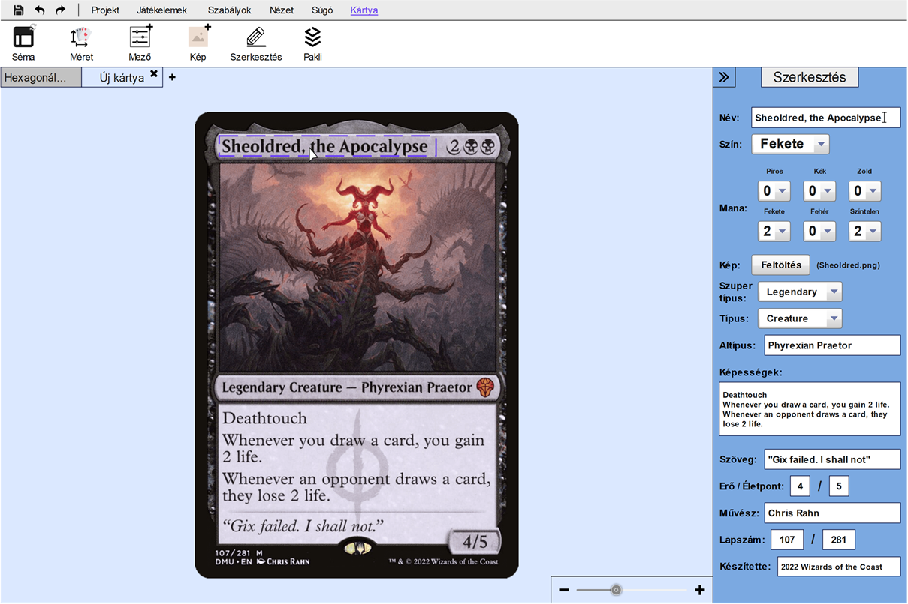
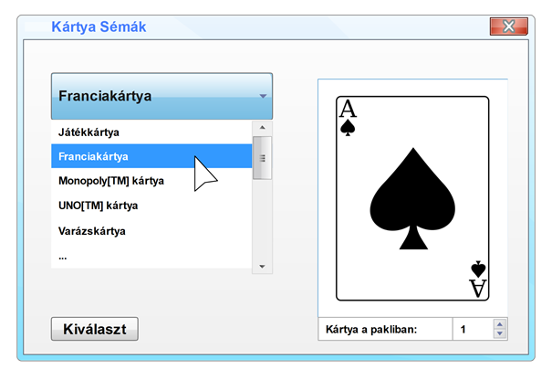
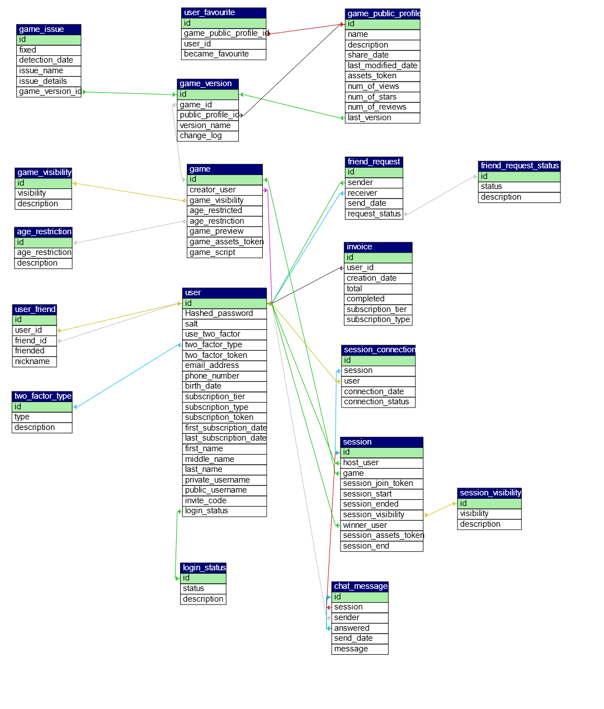

Csoport neve: EOF
Feladat sorszáma: 4
Feladat címe: Társasjáték készítő platform
Rendszertervezés
Gyakorlatvezető:
Mileff Péter
Csoporttagok:
|
Név |
Neptunkód |
E-mail cím |
|
Baba Levente |
HLFA5R |
babalevi2018@gmail.com |
|
Erdélyi Péter |
JH3V7T |
petike096@gmail.com |
|
Halász Máté Sándor |
T1TNWL |
maseny0@gmail.com |
|
Molnár Márk |
TLZ12Y |
molnar.mark.144@gmail.com |
|
Soltész Viktor |
F2UJS6 |
solteszviktor01@gmail.com |
2024. november 24.
Verziótörténet
|
Verzió |
Leírás |
Szerző |
|
|
2024. 11. 12. |
0.2 |
Editor és kártya felületek kidolgozása |
Halász Máté Sándor, Erdélyi Péter |
|
2024. 11. 13. |
0.2.5 |
Editor felület kiegészítése |
Erdélyi Péter |
|
2024. 11. 15. |
0.3 |
Workshop felület kidolgozása |
Erdélyi Péter |
|
2024. 11. 17. |
0.5 |
Kártya felületek további kidolgozása |
Halász Máté Sándor |
|
2024. 11. 18. |
0.6 |
Adatbázis-kezelő kiválasztása |
Baba Levente |
|
2024. 11. 20. |
0.7 |
Relációs adatmodell elkészítése |
Baba Levente |
|
2024. 11. 22. |
0.9 |
Relációs adatmodell pontosítása |
Baba Levente |
|
2024. 11. 24. |
0.9.5 |
Kapcsolattartó osztályok felsorolása, véglegesítés |
Baba Levente |
|
2024. 11. 24. |
1.0 |
Formázás, véglegesítés |
Erdélyi Péter |
Tartalomjegyzék
2.3. Kártyaszerkesztő modul felülete
2.4. Kártyaséma párbeszédablak
Jelen rendszertervezés dokumentum célja, hogy egy átfogó képet adjon a ,,Crafting Table” elnevezésű webes platform felhasználói felületével és adatbázis-kezelésével kapcsolatban.
A rendszertervezés során kitérünk a UI megvalósításának egyes részletkérdéseire, figyelembe vesszük az SRS dokumentumban meghatározott követelményrendszert, emellett az előzőleg megrajzolt kezdetleges interfészek alapján elkészítjük a felhasználói felület első prototípusát. Fontos számunkra a felhasználói élmény, ezért mindenekelőtt egy intuitív, ugyanakkor letisztult UI-t szeretnénk tervezni. Mivel a Crafting Table középpontjában az editor áll, ezért ehhez első lépésben az editor-hoz tartozó látványterveket fogjuk realizálni és prezentálni.
A perzisztens adatok tárolásához kiválasztjuk az adatbázis-kezelő rendszerünket, létrehozzuk a szükséges táblákat, majd ezek mintájára felvázoljuk az adatmodelleket. Platformunkat várhatóan több ezer felhasználó fogja rendszeresen látogatni, ebből adódóan pedig elengedhetetlen, hogy az adatkezelést hatékony módon valósítsuk meg. A rendelkezésre álló információk már lehetővé teszik számunkra, hogy az adatbázisunknak megalkossuk az első működőképes vázszerkezetét, amely tartalmazza az oldal üzemeléséhez szükséges legfontosabb adattagokat.
Ahogyan már korábban említettük, a Crafting Table platform sarkalatos eleme a társasjáték szerkesztő, ezért ebben a fejezetben főként az editor-hoz kapcsolódó dizájnterveket fogjuk ismertetni. A felhasználói felületeket az 1 – 4. ábrák illusztrálják a következő alfejezetekben.
Az editor működésével kapcsolatban sokkal részletesebb leírás olvasható a Felhasználói dokumentációban.
A workshop a Crafting Table-nek az a felülete, ahol a felhasználók a mások által feltöltött tartalmak között böngészhetnek, és a társasjátékokat le tudják tölteni a saját könyvtáraikba. Ha egy felhasználó megnyitja a weboldalnak ezt a részét, akkor az 1. ábra szerinti látvány tárul elé.

1. ábra: A workshop felülete
A workshop bal oldalán található egy navigációs sáv, ahol a böngészéshez szükséges alapvető funkciókat lehet igénybe venni:
· Rendezés: A társasjátékok bizonyos szempontok szerint rendezhetők, pl. értékelések, népszerűség vagy dátum alapján. A rendezéshez megadható növekvő vagy csökkenő irány.
· Keresés: A társasjátékok között van lehetőség keresni. Ha a keresősávba beírunk egy kulcsszót, akkor a találatoknál csak a keresésnek megfelelő társasjátékok fognak szerepelni.
· Szűrés: A társasjátékokat bizonyos feltételek alapján tovább lehet szűrni. Ilyen pl. a játékosszám vagy a kategória, amiket be lehet csukni a dupla nyilakkal, ha a szűrés során nincs rájuk szükség.
A workshop jobb oldalán a kilistázott társasjátékok foglalnak helyet. Egy-egy ilyen tartalmat szabadon meg lehet tekinteni, viszont a társasjátékok letöltése bejelentkezéshez kötött, tehát ha egy látogató rákattint a ,,Letöltés” gombra, akkor átirányításra kerül a bejelentkezési képernyőre.
A társasjáték szerkesztő felülete csak bejelentkezés után válik elérhetővé. A 2. ábra az editor kinézetét hivatott szemléltetni.

2. ábra: Az editor felülete
Az editor UI tulajdonképpen felosztható az alábbi területekre:
· Menüsor: A szerkesztő felület legfelső sorában található. Tematikus csoportosításban tartalmazza a szerkesztő főbb funkcióit és megnyitható menüit.
· Eszköztár: A menüsor alatt közvetlenül elhelyezkedő rész az eszköztár. Itt gyorsan elérhetők a kiválasztott menühöz tartozó műveletek.
· Munkaterület: A képernyő középső zónája, amely a szerkesztő leglényegesebb szerepét tölti be. Ezen a területen lehet nyomon követni a projekt aktuális állapotát, valamint itt lehet a társasjáték különböző elemeit módosítani.
· Előnézet: Ezen a helyen jelenik meg az éppen kiválasztott játékelem előnézeti képe. Ha nincs ilyen, akkor az előnézeti kép üres lesz.
· Elemlista: Az előnézet alatti, azzal egy sávban lévő területen a projektbe beillesztett játékelemek (objektumok) listája látható. Az elemlista célja csupán egy rövid áttekintést adni, a részletes szerkesztést általában egy másik ablakban vagy felületen kell elvégezni.
A játékelemek beillesztése drag-and-drop módon történik az eszköztárból. Egy ilyen műveletet követően megnyílik egy új ablak a munkaterület felső sávjában, ahová átlépve a felhasználó az adott objektumot részletekbe menően tudja módosítani.
2.3. Kártyaszerkesztő modul felülete
Minden játékelemhez külön modul tartozik, amely az elemen értelmezhető különböző műveleteket foglalja magában, és amely csak akkor jelenik meg, amikor a felhasználó a kiválasztott objektumot szerkeszti. Ezek a modulok mindig a menüsor szélén helyezkednek el, és a többi menühöz képest megkülönböztető színezéssel rendelkeznek. A Crafting Table egyik ilyen modulja a kártyaszerkesztő felülete, amelyhez csak egy kártya beszúrása után lehet hozzáférni. A kártyaszerkesztő modulra mutat példát a 3. ábra.

3. ábra: A kártyaszerkesztő modul felülete
A fenti ábrából jól látszik, hogy a kártyaszerkesztő milyen lehetőségeket kínál a felhasználónak egy kártya tervezésére. Többek között meg lehet változtatni a kártya sémáját, át lehet méretezni a lapokat, és létre lehet hozni paklikat. Természetesen
Ebben a példában egy Magic: The Gathering™ lap látható, aminek éppen a szerkesztés menüpontja figyelhető meg. Ezen a menüponton belül módosítható a kártya összes mezőjének tartalma. A mező gyakorlatilag a kártyán lévő információk tárolására szolgáló egység, amibe a felhasználó különböző input-ot vihet be, pl. szöveget, számot vagy képet. Mivel a Magic: The Gathering™ egy támogatott kártyaformátum, ezért a Crafting Table az erre a formátumra vonatkozó jellegzetes mezőket alapértelmezetten létrehozza, tehát a felhasználónak ezeket külön már nem szükséges definiálnia.
2.4. Kártyaséma párbeszédablak
Az editor használata során gyakran kérjük a felhasználót valamilyen interakcióra, aminek az egyik eszköze a párbeszédablak. Ha a ,,Séma” ikonra kattintunk, akkor megjelenik előttünk a 4. ábrán felvázolt párbeszédablak.

4. ábra: A kártyasémák párbeszédablakának felülete
Bal oldalt egy legördülő menüből ki lehet választani, hogy milyen típusú kártyát szeretnénk szerkeszteni. Ez a lista kiterjed nemcsak a támogatott kártyaformátumokra, hanem a saját típusú kártyákra is. A kiválasztott sémának egy előnézetét mutatja a jobb oldal. A folyamat legvégén a választásunkat meg kell erősíteni a ,,Kiválaszt” gombra való kattintással, különben a beállítás elveszik.
3.1. Adatbázis-kezelő kiválasztása
A Crafting Table adatbázisának kezeléséhez a MySQL rendszert fogjuk alkalmazni az ASP.NET Core Web API keretrendszerével kiegészítve. A kettő közötti kapcsolatteremtés egyedi technikáit az alábbiakban foglaljuk össze:
· Kapcsolat létrehozása: Az EF Core ORM használatával a Web API a DbContext osztályon keresztül kapcsolódik a MySQL adatbázishoz, amelyet az adatbázis kapcsolat string-je konfigurál.
· Scaffold generálása: A scaffold folyamat entitás osztályokat (táblák leképezése) és egy DbContext osztályt hoz létre, amely az adatbázis műveleteket kezeli.
· Entitások: Minden adatbázistábla egy C# osztály formájában jelenik meg, amely az oszlopokat tulajdonságként tartalmazza.
· Adatbázis kommunikációja: A DbContext osztály kezeli az adatbázis műveleteket, például az adatok lekérdezését, módosítását, hozzáadását és törlését.
· Működés: Az EF Core a LINQ lekérdezéseket SQL utasításokká fordítja, és elküldi a MySQL adatbázisnak.
· Controller: A Web API egyik alapegysége, amely a beérkező HTTP kéréseket fogadja, feldolgozza, és visszaadja a választ. A controller-ek a beérkező adatok hitelesítéséért és az üzleti logika vagy szolgáltatások meghívásáért felelnek.
· Service: Egy különálló osztály vagy réteg, amely az üzleti logikát kezeli és a controller hívásait dolgozza fel. A szolgáltatásokat az újrafelhasználhatóság és a kód modularitásának biztosítása érdekében hozták létre.
· Endpoint: Az API-n belül egy adott URL vagy útvonal, amely egy adott funkciót vagy műveletet biztosít (pl. adatok lekérdezése, módosítása). Az endpoint-ok a controller-en belül kerülnek definiálásra, és HTTP metódusokkal (GET, POST stb.) érhetők el.
· DTO (Data Transfer Object): Egy egyszerű osztály, amelyet adat átvitelére használnak a controller és más rétegek, például a service vagy a kliens között. A DTO-k csökkentik az adatstruktúra komplexitását, és elkerülik a túl sok információ továbbítását.
Az adatbázis relációs adatmodelljét az 5. ábra szemlélteti. Jelenleg összesen 18 adattáblában tároljuk a Crafting Table működéséhez szükséges adatokat, amik a jövőben várhatóan bővülni fognak.

5. ábra: Az adatbázis relációs adatmodellje
3.3. Az adatbázis-kezelővel kapcsolatot tartó osztályok
Az adatbázis-kezelővel kapcsolatot tartó osztályokat az 1. táblázatban gyűjtöttük össze.
|
Osztály |
Leírás |
|
Program.cs |
Az alkalmazás indulásáért és konfigurációjáért felelős osztály, amely beállítja a szolgáltatásokat és middleware-eket. |
|
Startup.cs (opcionális) |
Az alkalmazás inicializációját és főbb beállításait tartalmazó osztály, ha ezt külön használják. |
|
Controller |
A HTTP kérések fogadásáért és az üzleti logika meghívásáért felelős osztály (pl. UserController). |
|
Service |
Az üzleti logikát megvalósító osztályok, amelyeket a controller-ek használnak (pl. UserService). |
|
Repository |
Az adatbázissal való közvetlen kapcsolatot kezelő osztályok, amelyek elválasztják az adatkezelést a logikától (pl. UserRepository). |
|
DbContext |
Az adatbázis műveletek kezelésére és a táblák leképezésére szolgál (pl. MyDatabaseContext). |
|
Entitás |
Az adatbázis táblák modelljei, amelyek a tábla mezőit reprezentálják (pl. User). |
|
DTO |
Az adatok átvitelére használt osztályok, amelyek minimalizálják a visszaküldött adatokat (pl. UserDto). |
|
Middleware (opcionális) |
Egyedi köztes rétegeket kezelő osztályok, például hitelesítéshez vagy naplózáshoz. |
1. táblázat: Az adatbázis-kezelővel kapcsolatot tartó osztályok